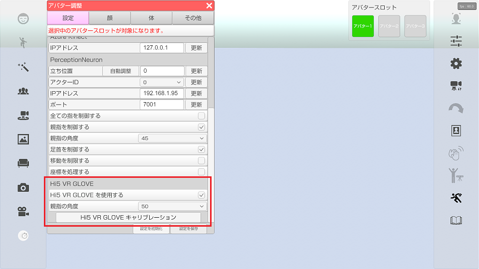

センサーを付けたグローブを装着し、指を制御します。
Hi5 VR GLOVE で腕は動かせないので
mocopi や PerceptionNeuron 等の全身操作の機器と合わせて使用します。
※PerceptionNeuron V2 と合わせて使用する場合は「全ての指を制御する」をオフにしてください。
後継製品の Hi5 2.0 VR Gloves にも対応しています。
アバターの調整 - 設定 - Hi5 VR GLOVE から設定、調整を行うことが出来ます。

・Hi5 VR GLOVE を使用する
Hi5 VR GLOVE を使用するかを設定します。
・親指の角度
Hi5 VR GLOVE 使用時の 3tene で表示されているキャラクターの親指の角度を調整します。（40～60 推奨）
・Hi5 VR GLOVE キャリブレーション
Hi5 VR GLOVE のキャリブレーションを行います。
「Hi5 VR GLOVE を使用する」が ON の時のみ選択可能
「Hi5 VR GLOVE キャリブレーション」を選択すると画面が切り替わります。
画面の指示に従いキャリブレーションを進めてください。
「キャリブレーション開始」を選択すると Bポーズ、Pポーズの順でキャリブレーションを行います。
キャリブレーション終了後は「キャリブレーション終了」を選択すると 3tene の画面に戻ります。
複数のキャラクターにHi5 VR GLOVE の動きを反映することが出来ます。
「Hi5 VR GLOVE を使用する」のチェックが入っているキャラクター全てに Hi5 VR GLOVE の動きが反映されます。